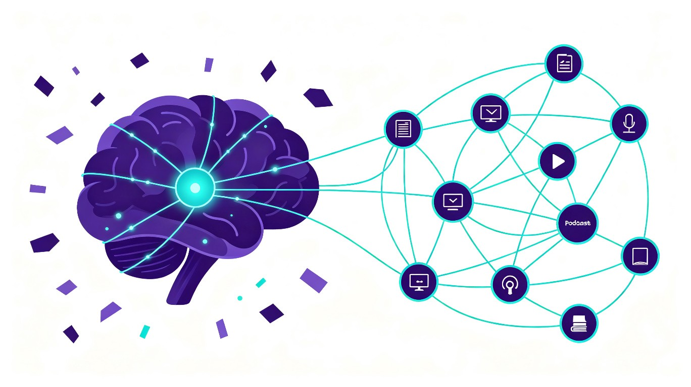
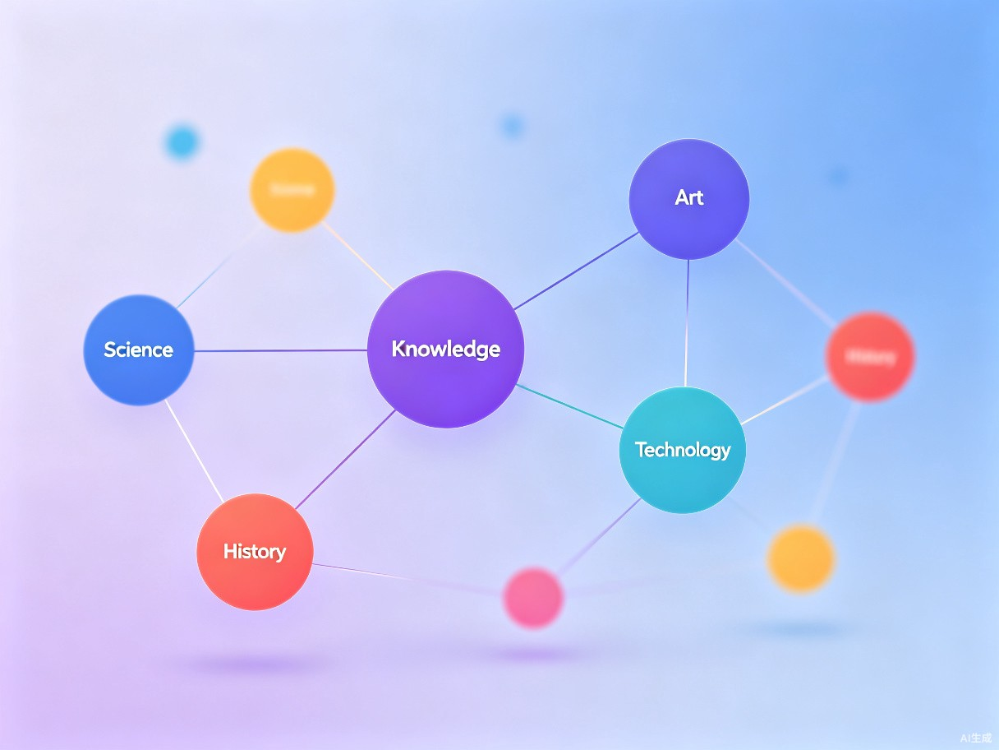

让每一篇收藏的文章、每一段看过的视频、每一条灵光乍现的想法，
都能自动编织成属于你的个人知识网络

你是否有过这样的体验：收藏夹里存了几百篇文章，标记了无数个「稍后阅读」，但真正回头看的不到5%？每天刷公众号、看短视频、听播客，信息输入量巨大，却总感觉脑子里一团乱麻？
问题不在于我们学得不够多，而在于知识没有被连接起来。零散的知识点就像散落的珠子，随时会滚落到记忆的角落。只有当它们被编织成一张网，知识才真正属于你。
「织知」的灵感来源于一次深夜的困惑：我收藏了这么多东西，到底学会了什么？于是我们想用AI的力量，让每个人都能轻松构建自己的知识体系。
一款结合大语言模型的知识管理系统，包含浏览器插件 + Web 应用双端联动， 自动将你碎片化的信息输入编织成可视化的个人知识网络。
AI 自动提取文章、视频、笔记中的核心概念，识别概念之间的关联，自动生成可视化知识图谱，让你的知识结构一目了然。
浏览器插件一键收藏当前页面，AI 自动摘要、打标签、关联已有知识。无需手动整理，收藏即编织。
基于艾宾浩斯遗忘曲线和知识关联度，智能推荐复习内容。不是简单重复，而是沿着知识网络的深度探索。
分析你的知识网络，自动识别薄弱环节和知识盲区，推荐相关学习资源，帮你系统性地补全认知拼图。
跨领域的知识连接往往孕育创新。织知会主动提示你看似不相关领域的知识关联，激发新的创意火花。
支持网页、移动端、浏览器插件多端同步。无论你在哪里阅读，知识都能实时汇入你的知识网络。
用户通过浏览器插件、移动端分享、API接入等方式，将阅读的文章、观看的视频、记录的笔记一键收藏到织知系统。支持多种格式：文字、视频、音频、图片。
大语言模型对内容进行深度理解，提取核心概念、关键观点、实体关系。自动生成结构化的知识元数据，包括主题、标签、摘要、关联概念。
将新知识与你已有的知识网络进行语义匹配，自动发现关联关系。概念越接近的知识节点自动连接，形成越来越密的知识网络。
以交互式知识图谱呈现你的个人知识网络。点击节点查看详情，拖拽探索关联，发现知识盲区，触发创意灵感。

每一个渴望成长的终身学习者，都值得拥有一张属于自己的知识地图。
行业信息更新快，需要持续学习但时间碎片化。学过的东西容易忘，想用的时候找不到。希望有系统的知识沉淀来支撑职业发展。
学习资料多且杂，论文、课件、参考书、网课笔记散落各处。复习时找不到重点，知识串联不起来，考试前手忙脚乱。
灵感碎片化，好想法稍纵即逝。需要跨领域知识碰撞来激发创意，但素材管理混乱，创作时常常「书到用时方恨少」。
传统知识管理需要大量手动整理、打标签、分类，每周花费 2 小时以上。织知利用 AI 自动完成 80% 的整理工作，让你把时间用在真正的学习和思考上。知识检索效率提升 3 倍以上，不再在收藏夹里大海捞针。
在信息爆炸的时代，越来越多的人陷入「学习焦虑。织知降低了系统性学习的门槛，让每个人都能轻松构建自己的知识体系。当更多人拥有更清晰的思考能力，整个社会的认知水平也会随之提升。知识不再是奢侈品，而是每个人的基础设施。
知识经济时代，个人知识管理是千亿级市场。从 C 端订阅模式起步，逐步拓展到 B 端企业知识管理、教育领域。每个人的知识网络都是独一无二的数据资产，具有极高的用户粘性和迁移成本。
传统笔记工具解决的是「记录」问题，织知解决的是「连接」问题。从线性的笔记到网络化的知识图谱，这是认知工具的范式升级。AI 不只是辅助工具，更是你的知识「编织者」。
基于大语言模型 + 向量数据库 + 知识图谱的三层架构
flowchart TB
subgraph 输入层
A[浏览器插件] --> D[内容采集引擎]
B[移动端 App] --> D
C[API 接入] --> D
end
subgraph 处理层
D --> E[LLM 理解与提取]
E --> F[向量嵌入生成]
F --> G[向量数据库]
E --> H[知识图谱构建]
H --> I[图数据库]
end
subgraph 服务层
G --> J[语义搜索]
I --> K[关联推荐]
J --> L[智能复习]
K --> L
K --> M[灵感碰撞]
end
subgraph 呈现层
L --> N[Web 应用]
M --> N
J --> N
N --> O[知识图谱可视化]
N --> P[移动端同步]
end
style A fill:#8b5cf6,stroke:#8b5cf6,color:#fff
style E fill:#22d3ee,stroke:#22d3ee,color:#0f0b1f
style J fill:#ec4899,stroke:#ec4899,color:#fff
style N fill:#8b5cf6,stroke:#8b5cf6,color:#fff